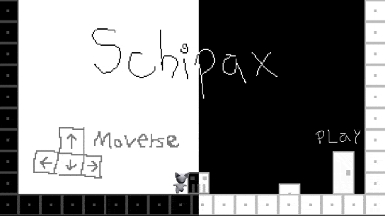
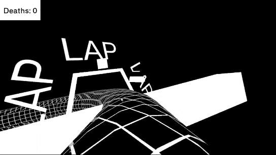
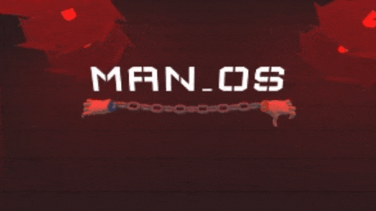
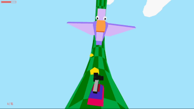
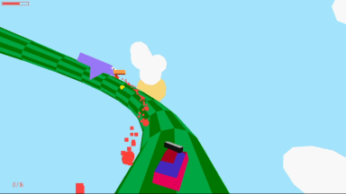
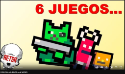
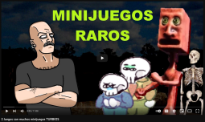
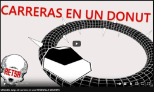
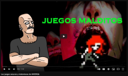

Pura Gilada is an unfinished third person shooter game where the player character and enemies live on the inside of a sphere.
The game is kind of a spiritual predecessor to Ultratoro, in the sense of being an arcade type game in a non-euclidian space.
Had a lot of fun playing around with render textures to archieve some surreal and psychedelic visuals.

Puzzle platformer where the world is split into 2 parallel dimensions.
Made in 48hs as an entry for the Global Game Jam with the theme "Duality"
Schipax is a team effort
Sebastian Salguero: 3D art
Me: Code, 2d art
Gabriel Iglesias: Level Design / Music
Download at itch.io.
Runner game where you avoid obstacles in a torus, increasing speed with every lap.
Made for the Black and White Jam #8 with the theme "Loop" and the restriction to only use 2 colors.
A month after the initial release on itch, i released an Android version with more levels and cars to select.
Ultratoro was present at the EVA 2022, one of the biggest gamedev conventions in Argentina.
Play online/download at itch.io or Google Play.
3D puzzle platformer in which you take control of 2 desembodied hands connected by a chain.
Can also be played as a 2 player co-op experience, where each player controls a hand.
Made in 2 weeks for the Devs al Asador Game Jam, reaching the third place.
My brother Nictobrio made the 3D modeling and half of the game and level design.
Play online/download at itch.io.
Gigatoro was born out of a simple concept: adding guns to Ultratoro.
This colorful Spin-off was where i took the idea of adding giant "Bosses" like in the upcoming Ultratoro 2.
 Released 2 Devlogs, one describing small experiments and prototypes, the other documenting the journey making Ultratoro.
Also made 2 videos covering some indie hidden gems, the first one being about SpookWare and Fuzz Dungeon, the other one covering the games released by Amon26.
   